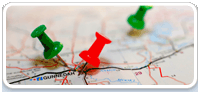
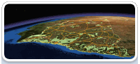
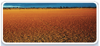
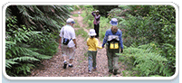
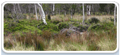
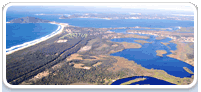

Loading ...
Browse our website for maps and data
What’s new
All themes
Air
Biodiversity and conservation

Land and soil
- Soil profiles, maps
- Acid sulfate soil risk maps
- SoE report: Land
- Search for soil data
Parks
Vegetation
- Vegetation: data inventory, maps, types, benchmarks, public registers
- SoE report: Native vegetation
- Cumberland Plain maps
- Search for vegetation data
Waste and pollution
- POEO public register (pollution and noise control)
- Local government waste and resource recovery data
- Underground petroleum storage maps
Water and coast
- Beachwatch: data, sampling locations, annual reports
- Estuaries
- Seabed habitat mapping
- SoE report: Water
- Search for water data